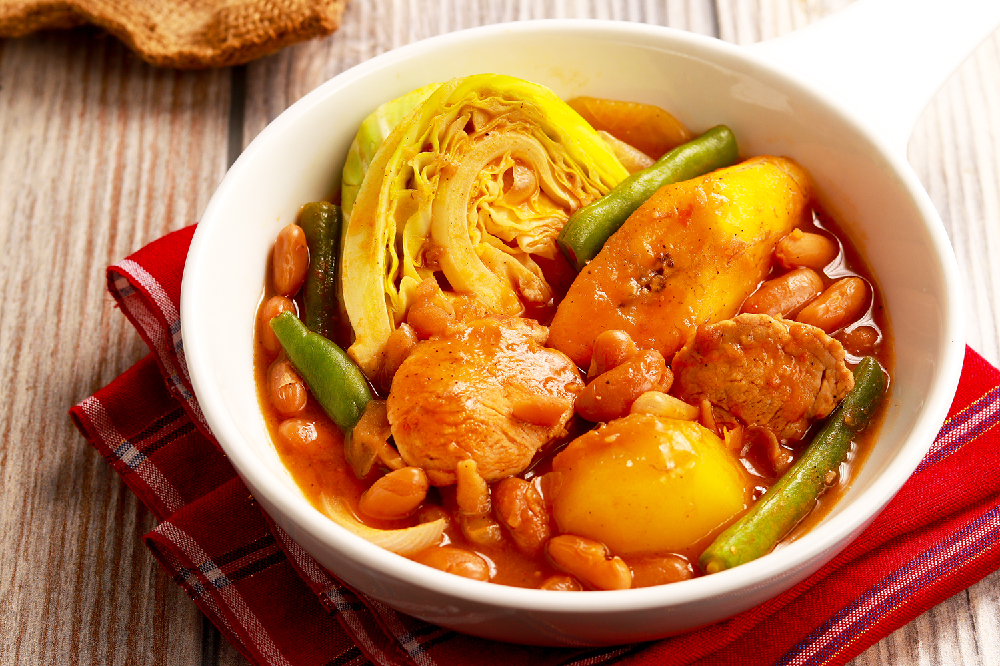

Pochero Recipe

Ingredients:
- 1 lb pork belly or beef, cubed
- 4 cups water
- 1 onion, quartered
- 2 cloves garlic, minced
- 2 tomatoes, chopped
- 1/2 cup tomato sauce
- 1 tbsp fish sauce
- 1/2 tsp salt
- 1/2 tsp black pepper
- 2 pieces plantain bananas (saba), sliced
- 2 potatoes, cubed
- 1 small cabbage, chopped
- 1 bunch bok choy (pechay)
- 1 cup chickpeas
- 2 tbsp cooking oil
Instructions:
- Heat oil in a pot and sauté garlic, onions, and tomatoes until soft.
- Add the pork or beef and cook until browned.
- Pour in water and bring to a boil. Simmer until meat is tender.
- Stir in tomato sauce, fish sauce, salt, and black pepper.
- Add the potatoes, plantain bananas, and chickpeas. Cook until tender.
- Add the cabbage and bok choy. Simmer for another 5 minutes.
- Serve hot with steamed rice. Enjoy!
Back to Menu